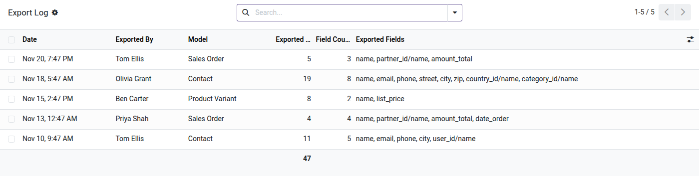

Know who takes which data out of your database: model, fields, number of rows, date.
Odoo offers only an on/off switch: the export permission is granted, or it is not. Once granted, nothing more is known — not which model was dumped, not how many rows went out, not when. The day a customer file circulates outside, there is no way to know where it came from.
Model, number of rows, number of fields, the field list and the date: what left the database, and who took it out.

A log tells you what went out; it does not restrict what is visible. So that a salesperson only sees their own portfolio, a project manager only their projects, a cashier only their register, the OdooSkills range includes some fifteen access-restriction modules — by sales team, by department, by project, by accounting journal, by warehouse. Full catalog: apps.odooskills.com.
License LGPL-3 — compatible with Odoo 20.0 Community and Enterprise. Support: apps@odooskills.com.